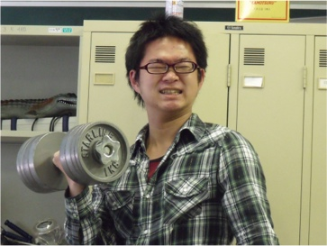

市來 健吾

| 研究テーマ | 銅酸化物高温超伝導体の電子状態の研究 |
|---|---|
| 出身 | 愛知県 |
| 卒業論文題目 | 高温超伝導体Bi2Sr2Ca0.92Y0.08Cu2O8+δの低エネルギー放射光角度分解光電子分光 |
| 修士論文題目 | 高温超伝導体Bi2Sr2Ca0.92Y0.08Cu2O8+δにおけるボゴリューボフ準粒子の繰り込み効果の研究 |
| 国際学会 |
1. 学会名：2010 Japan-Korea Student Workshop
題目：Angle-resolved Photoemission Study of Quasiparticles in the Superconducting State 口頭発表 場所：Hiroshima University, Japan (2010.8) |
| 国内学会 |
1. 学会名：第25回 日本放射光学会年会
題目：放射光角度分解光電子分光によるBi2212の超伝導転移に伴う繰り込み効果の研究 口頭発表 場所：鳥栖市民文化会館 (2012.1) 2. 学会名：日本物理学会 2012年秋季大会 題目：Bi2Sr2Ca0.92Y0.08Cu2O8+δの超伝導転移に伴う繰り込み効果の研究 口頭発表 場所：横浜国立大学 (2012.9) |
| 受賞 | 卒業論文発表優秀賞 (2011.3) |